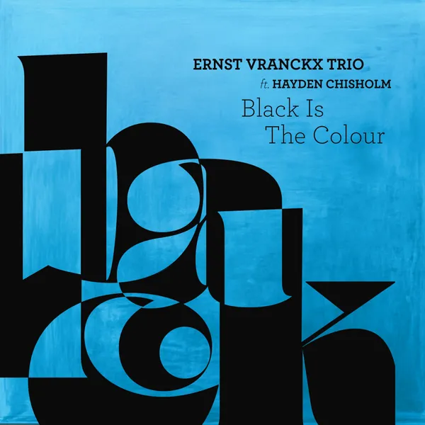
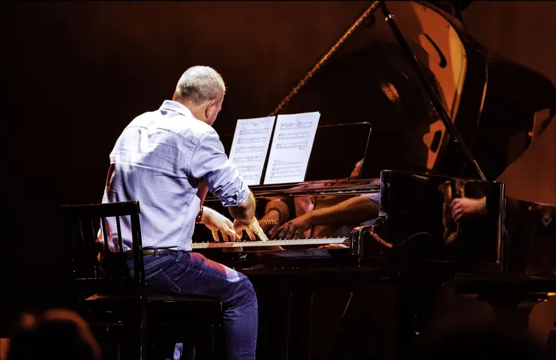
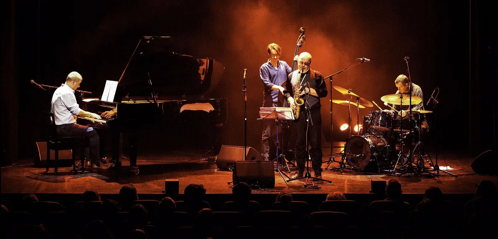

Nieuw album · Eden River Records
Black Is
The Colour
Opgenomen in mei 2022 in de Riverside Studio’s in Keulen. Een integer coloriet van cooljazz — fris en bezield — met de Nieuw-Zeelandse saxofonist Hayden Chisholm als gast en crooner.
- Ernst Vranckx
- piano
- David Helm
- contrabas
- Kris Duerinckx
- drums
- Hayden Chisholm
- sax & vocals

Biografie
European cool,
met etnische en klassieke kleuren
Tijdlijn
Een carrière in
dertien noten
Discografie
Vijf albums,
één stem
Van het lyrische Aquarelle tot het intieme Black Is The Colour — beluister elk album of bestel de cd rechtstreeks bij Ernst.
Pers
“Refined playing, interesting choice of compositions, a sense of space and economy when needed, intimate atmospheres… a delicate, sometimes fragile but touching music, always rich, inspired and with great harmonic sense. Nice storytelling!”
Michel Herr · 2024“Hoe meer we de plaat laten rijpen, hoe minder het ons verbaast dat Ernst Vranckx zo goed als elk continent heeft weten verblijden met zijn muziek.”
“Les thèmes évanescents du Flandrien qui peint des brumes à la Turner.”“Vranckx lijkt mij een volbloed romanticus, wiens soms opvallend sterke composities vast ook in de smaak zouden vallen bij Manfred Eicher van ECM.”

Live & boekingen
Breng het trio
naar uw zaal
Clubs, cultuurcentra en festivals — in België en daarbuiten. Ernst speelde al in heel Europa, Zuidelijk Afrika en China.
TrioKwartet ft. Hayden Chisholm
Boekingsaanvraag
Contact